에너지관리기사 (2010-09-05 기출문제)
1과목: 연소공학
1. 어떤 기관의 출력은 100kW이며 매 시간당 30kg의 연료를 소모한다. 연료의 발열량이 8000kcal/kg 이라면 이 기관의 열효율은 약 몇 %인가?
- 15
- 36
- 69
- 91
(정답률: 49%)

2. 경유에 포함된 탄화수소 중 세탄가가 높은 순서대로 나타낸 것은?
- 노말 파라핀＞나프텐＞올레핀
- 노말 파라핀＞올레핀＞나프텐
- 올레핀＞노말 파라핀＞나프텐
- 올레핀＞나프텐＞노말 파라핀
(정답률: 80%)
3. 200kg의 물체가 10.0m의 높이에서 지면에 떨어졌다. 최초의 위치 에너지가 모두 열로 변했다면 약 몇 kcal의 열이 발생하겠는가?
- 2.5
- 3.6
- 4.7
- 5.8
(정답률: 59%)
4. 다음 연료 중 발열량(kcal/kg)이 가장 큰 것은?
- 메탄
- 부탄
- 경유
- 중유
(정답률: 71%)
5. 건타입(Gun type) 버너에 대한 설명으로 옳은 것은?
- 연소가 다소 불량하다
- 비교적 대형이며 구조가 복잡하다.
- 버너에 송풍기가 장치되어 있다.
- 보일러나 열교환기에는 사용할 수 없다.
(정답률: 88%)
6. 기름연소의 경우 공기량이 부족할 때 노내 화염의 색깔은 주로 어떤 색을 띠는가?
- 청색
- 백색
- 오렌지색
- 암적색
(정답률: 78%)
7. 링겔만 매연농도표를 이용한 측정방법에 대한 설명으로 틀린 것은?
- 6개의 농도표와 배출 매연의 색을 연돌 출구에서 비교하는 것이다.
- 농도표는 측정자로부터 23m 떨어진 곳에 설치한다.
- 연돌 출구로부터 30~45m 정도 떨어진 연기를 관측한다.
- 연기의 흐르는 방향의 직각의 위치에서 측정한다.
(정답률: 71%)
8. 15℃의 공기 1kg을 부피 1/4로 압축할 경우 등온 압축에서의 소요 일량은 약 몇 kgㆍm인가? (단, 공기의 기체상수는 29.3khㆍm/kgㆍK 이다.)
- 265
- 610
- 5080
- 11700
(정답률: 50%)
9. 어떤 단일기체 10Sm3을 연소가스 분석결과 H2O : 20Sm3, CO : 2Sm3, CO2 : 8Sm3을 얻었다면 이 연료는 다음 중 어떤 기체에 해당하는가?
- CH4
- C2H2
- C2H6
- C3H8
(정답률: 63%)
10. 공업적으로 가장 많이 이용하고 있는 액체연료의 연소방식은?
- 분무연소
- 액면연소
- 심지연소
- 증발연소
(정답률: 83%)
11. 다음 보기와 같은 부피 조성을 가진 석탄가스의 연소시 생성되는 이론 습연소 가스량은 약 몇 Sm3/m3인가?
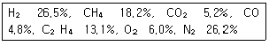
- 0.89
- 3.01
- 4.91
- 6.80
(정답률: 54%)
12. 연소장치의 연소효율(Ec)식이
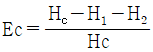
일 때 식에서 Hc는 연료비 발열량, H1은 연재 중의 미연탄소에 의한 손실을 의미한다면 H2는 무엇을 뜻하는가?- 연료의 저발열량
- 전열손실
- 불완전연소에 따른 손실
- 현열손실
(정답률: 88%)
13. “압력이 일정할 때 기체의 부피는 온도에 비례하여 변한다.”라는 법칙은 무슨 법칙인가?
- Boyle의 법칙
- Gay Lussac의 법칙
- Joule의 법칙
- Boyle-Charle의 법칙
(정답률: 76%)
14. 연도가스 분석결과가 CO2 13%, O2 8%, CO 0%일 때 공기과잉계수(m')은 얼마인가? (단, CO2max는 21%이다.)
- 1.22
- 1.42
- 1.62
- 1.82
(정답률: 65%)
15. 예혼합연소의 특징에 대한 설명으로 옳은 것은?
- 역화의 위험성이 없다.
- 로(爐)의 체적이 커야 한다.
- 연소실부하율을 높게 얻을 수 있다.
- 화염대에 해당하는 두께는 10~100mm 정도로 두껍다.
(정답률: 72%)
16. 프로판가스 1Sm3을 완전연소시켰을 때의 건조연소가스량은 약 몇 Sm3인가? (단, 공기 중의 산소는 21v%이다.)
- 10
- 16
- 22
- 30
(정답률: 52%)
17. 연료가 연소할 때 고온부식의 주원인이 되는 연료 성분은?
- 황
- 수소
- 바나듐
- 탄소
(정답률: 85%)
18. 공기와 연료의 혼합기체의 표시에 대한 설명 중 옳은 것은?
- 공기비(excess air ratio)는 연공비의 역수와 같다.
- 연공비(fuel air ratio)라 함은 가연 혼합기 중의 공기와 연료의 질량비로 정의된다.
- 공연비(air fuel ratio)라 함은 가연 혼합기 중의 연료와 공기의 질량비로 정의된다.
- 당량비(equivalence ratio)는 실제 연공비와 이론연공비의 비로 정의된다.
(정답률: 88%)
19. 열효율이 압축비만으로 결정되며 동적사이클이라고도 하는 사이클은? (단, 비열비는 일정하다.)
- 오토 사이클
- 에릭슨 사이클
- 스털링 사이클
- 브레이튼 사이클
(정답률: 71%)
20. 폭굉(detonation)현상에 대한 설명으로 옳지 않은 것은?
- 확산이나 열전도의 영향을 주로 받는 기체역학적 현상이다.
- 물질 내에 충격파가 발생하여 반응을 일으키고 또한 반응을 유지하는 현상이다.
- 충격파에 의해 유지되는 화학 반응 현상이다.
- 반응의 전파속도가 그 물질 내에서 음속보다 빠른 것을 말한다.
(정답률: 68%)
2과목: 열역학
21. 공기표준 브레이튼(Brayton)사이클의 효율을 높이기 위한 방법으로 가장 적합한 것은?
- 공기압축기의 압력비를 증가시킨다.
- 압축기로 공급되는 공기의 온도를 높인다.
- 연소기로 공급되는 공기의 온도를 낮춘다.
- 터빈에서의 비가역성을 증대시킨다.
(정답률: 55%)
22. 한 과학자가 자기가 만든 열기관이 80℃와 10℃ 사이에서 작동하면서 100kJ 의 열을 받아 20kJ의 유용한 일을 할 수 있다고 주장한다. 이 과학자의 주장은 어떠한가?
- 열역학 제0법칙에 어긋난다.
- 열역학 제1법칙에 어긋난다.
- 열역학 제2법칙에 어긋난다.
- 열역학 제3법칙에 어긋난다.
(정답률: 75%)
23. Otto Cycle에서 압축비가 8일 때 열효율은 약 몇 %인가? (단, 비열비는 1.4이다.)
- 26.4
- 36.4
- 46.4
- 56.4
(정답률: 52%)
24. 다음 사이클(cycle) 중 수증기를 사용하는 동력 플랜트로 적합한 것은?
- 오토 사이클
- 다젤 사이클
- 브레이튼 사이클
- 랭킨 사이클
(정답률: 80%)
25. Carnot 사이클로 작동하는 가역기관이 800℃의 고열원으로부터 5000kW의 열을 받고 70℃의 저열원에 열을 배출할 때 동력은 약 몇 kW인가?
- 440
- 1600
- 3400
- 4560
(정답률: 54%)
26. 기체의 상태반정식이 아닌 것은?
- 오일러(Euler) 방정식
- 비리얼(Virial) 방정식
- 반데르발스(Van der Waals) 방정식
- 비티-브릿지만(Beattie-Bridgeman) 방정식
(정답률: 75%)
27. 다음 중 상대습도(rolative humidity)를 가장 쉽고 빠르게 측정할 수 있는 방법은?
- 건구온도와 습구온도를 측정한 다음 습공기선도에서 상대 습도를 읽는다.
- 건구온도와 습구온도를 측정한 다음 두 값 중 큰 값으로 작은 값을 나눈다.
- 건구온도와 습구온도를 측정한 다음 Mollier chart에서 읽는다.
- 대기압을 측정한 다음 습도곡선에서 읽는다.
(정답률: 92%)
28. 아음 중 표준증기압축 냉동시스템에 비교하여 흡수식 냉동시스템의 주된 장점은 무엇인가?
- 압축에 소요되는 일이 줄어든다.
- 시스템의 효율이 상승한다.
- 장치의 크기가 줄어든다.
- 열교환기의 수가 줄어든다.
(정답률: 85%)
29. 온도 250℃, 질량 50kg인 금속을 20℃의 물 속에 넣었다. 최종 평형 상태에서의 온도가 30℃이면 물의 양은 약 몇 kg인가? (단, 열손실은 없으며, 금속의 비열은 0.5kJ/kgㆍK, 물의 비열은 4.18kJㆍK이다.)
- 108.3
- 131.6
- 167.7
- 182.3
(정답률: 55%)
30. 높이 50m인 폭포에서 물이 낙하할 때 위치에너지가 운동에너지로 변했다가 다시 열에너지로 변한다면 물의 온도는 얼마나 올라가는가?
- 0.02℃
- 0.12℃
- 0.22℃
- 0.32℃
(정답률: 66%)
31. 1MPa, 500℃ 인 큰 용기 속의 공기가 노즐을 통하여 100kPa까지 등엔트로피 팽창을 한다. 출구속도는 약 몇 m/s인가? (단, 비열비는 1.4이고, 정압비열은 1.0kJ/kgㆍK이다.)
- 735
- 864
- 910
- 925
(정답률: 37%)
32. 그림과 같은 냉동기의 성능계수(COP)는 어떻게 나타낼 수 있겠는가?
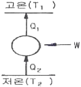
- W/Q1
- Q2/W
- (T1-T2)/T2
- T1/(T2-T1)
(정답률: 81%)
33. 온도와 관련된 설명으로 틀린 것은?
- 온도 측정의 타당성에 대한 근거는 열역학 제0법칙이다.
- 온도가 10℃ 올라가면 절대온도는 283.15K 올라간다.
- 섭씨온도는 물의 어는점과 끓는점을 기준으로 삼는다.
- SI 단위계에서 열역학적 온도 눈금(scale)으로는 켈빈눈금을 사용한다.
(정답률: 83%)
34. 피스톤이 설치된 실린더에 압력 0.3MPa, 체적 0.8m3인 습증기 4kg이 들어있다. 압력이 일정한 상태에서 가열하여 습증기의 건도가 0.8이 되었을 때 수증기에 의한 일은 몇 kJ인가? (단, 0.3MPa에서 비체적은 포화액은 0.001m3/kg, 건포화증기는 0.60m3/kg이다.)
- 2⑤.5
- 237.2
- 3⑤.5
- 336.2
(정답률: 40%)
35. 하나의 실린더 안에 기체가 피스톤으로 갇혀 있다. 이 기체가 체적 V1에서 V2 로 팽창할 때 피스톤에 해준 일은
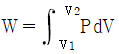
로 표시될 수 있다. 이 기체는 이 과정을 통하여 PV2=C(상수)의 관계를 만족시켜 준다면 W를 옳게 나타낸 것은?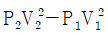
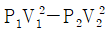
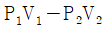
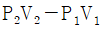
(정답률: 63%)
36. 임의의 과정에 대한 가역성과 비가역성을 논의하는데 적용되는 법칙은?
- 열역학 제0법칙
- 열역학 제1법칙
- 열역학 제2법칙
- 열역학 제3법칙
(정답률: 71%)
37. 오토(Otto)사이클을 유도-엔트로피(T-S) 선도로 표시하면 그림과 같다. 작동유체가 열을 방출하는 과정은?
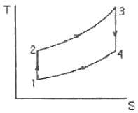
- 1-2과정
- 2-3과정
- 3-4과정
- 4-1과정
(정답률: 77%)
38. 실제 기체가 이상기체(ideal gas)에 가깝게 될 조건은?
- 압력이 낮고 온도가 높을 때
- 압력이 높고 온도가 낮을 때
- 온도, 압력이 모두 높을 때
- 온도, 압력이 모두 낮을 때
(정답률: 74%)
39. 압력 3000kPa, 온도 400℃인 증기의 비체적은 0.1015m3/kg이고 엔탈피는 3230kJ/kg이다. 이 상태에서 내부에너지는 약 몇 kJ/kg인가?
- 304
- 2501
- 2926
- 3231
(정답률: 52%)
40. 15℃의 물로부터 0℃의 얼음을 시간당 40kg 만드는 냉동기의 냉동톤은 약 얼마인가? (단, 얼음의 융해열은 80ckal/kg이고, 냉동톤은 3320kcal/h로 한다.)
- 0.14
- 1.14
- 2.14
- 3.14
(정답률: 59%)
3과목: 계측방법
41. 600R을 절대온도로 나타내면 약 몇 K인가?
- 273
- 333
- 372
- 393
(정답률: 60%)
42. 다음 중 1000℃ 이상의 고온체의 연속 측정에 가장 적합한 온도계는?
- 열전온도계
- 방사식 온도계
- 바이메탈식 온도계
- 액체압력온도계
(정답률: 75%)
43. 분동식 압력계에서 측정범위가 3000kg/cm2이상 측정 할 수 있는 것에 사용되는 액체로 가장 적합한 것은?
- 경유
- 스핀들유
- 피마자유
- 모빌유
(정답률: 76%)
44. 관로의 유속을 피토관으로 측정할 때 수주의 높이가 30cm이었다. 이 때 유속은 약 몇 m/s인가?
- 1.88
- 2.42
- 3.88
- 5.88
(정답률: 54%)
45. 다음 중 보일러의 자동제어에 해당되지 않는 것은?
- 연소제어
- 온도제어
- 급수제어
- 용량제어
(정답률: 77%)
46. 제어시스템에서 응답이 계단변화가 도입된 후에 얻게 될 최종적인 값을 얼마나 초과하게 되는지를 나타내는 척도는?
- 오프셋
- 응답시간
- 오버슈트
- 쇠퇴비
(정답률: 84%)
47. 어떤 보일러의 냉각기의 진공도가 730mmHg일 때 절대압력으로 표시하면 약 몇 kgf/cm2ㆍa인가?
- 0.02
- 0.04
- 0.08
- 0.12
(정답률: 52%)
48. 다음 각 신호의 전송방식과 신호전송거리로서 틀린 것은?
- 공기압전송식 : 100m 정도
- 전기전송식 : 30~수 km 까지
- 유압전송식 : 300m 이내
- 수증기압전송식 : 100m 정도
(정답률: 65%)
49. 광고온계의 온도측정 범위를 가장 잘 나타낸 것은?
- 100~300℃
- 100~500℃
- 700~2000℃
- 4000~5000℃
(정답률: 74%)
50. 다음 기계식 압력계중 정밀도가 가장 좋은 것은?
- U자관형 액주압력계
- 경사관식 액주압력계
- 단관형 액주압력계
- 링밸런스식 액주압력계
(정답률: 84%)
51. -200~500℃의 측정범위를 가지며 측온저항체 소선으로 주로 사용되는 저항소자(抵抗素子)는?
- 구리선(銅線)
- 백금선(白金線)
- Ni선(nickel線)
- 사미스터(thermistor)
(정답률: 75%)
52. 열전대를 보호하기 위해 사용되는 보호관 중 상용 사용온도가 가장 높으며, 급냉, 급열에 강하고, 방사오온계의 단망이나 2중 보호관의 외관으로 주로 사용되는 것은?
- 카보런덤관
- 자기관
- 내열강관
- 석영관
(정답률: 73%)
53. 램, 실린더, 기름탱크, 가압펌프 등으로 구성된 압력계는?
- 맥주형 압력계
- 브르돈관식 압력계
- 환상스프링식 압력계
- 분동식 압력계
(정답률: 67%)
54. 정전 용량식 액면계의 특징에 대한 설명 중 틀린 것은?
- 측정범위가 넓다.
- 구조가 간단하고 보수가 용이하다.
- 유전율이 온도에 따라 변화되는 곳에서도 사용할 수 있다.
- 습기가 있거나 전극에 피측정체를 부착하는 곳에는 부적당하다.
(정답률: 77%)
55. 다음 중 유량 측정과 관계가 없는 것은?
- 벤투리미터
- 전자유량계
- 로터미터
- 제겔콘
(정답률: 77%)
56. 층류와 난류를 판정할 때 레이놀즈수를 사용한다. 층류와 난류의 기준이 되는 임계 레이놀즈수는 얼마인가?
- 23
- 232
- 2320
- 23200
(정답률: 89%)
57. 오리피스(orifice)유량계에 대한 설명으로 틀린 것은?
- 베르누이(bernoulli)의 정리를 응용한 계기이다.
- 기체와 액체에 모두 사용이 가능하다.
- 유량계수 C는 유체의 흐름이 층류이거나 와유의 경우 모두 같고 일정하며 레이놀즈수에 무관하다.
- 오리피스 교축기구를 기하학적으로 닮은 꼴이 되도록 정밀하게 끝맺음질하면 정확한 측정값을 얻을 수 있다.
(정답률: 82%)
58. 그림에서 파이프의 지름이 각각 0.6m, 0.4m이고, (1)에서의 유속이 8m/s이면 (2)에서의 유속은 약 몇 m/s인가?
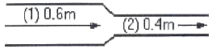
- 16
- 18
- 20
- 22
(정답률: 60%)
59. 색으로ㅆ 온도를 측정하고자 한다. 눈부신 황백색으로 나타날 때의 온도로서 가장 적합한 것은?
- 800℃
- 1000℃
- 1200℃
- 1500℃
(정답률: 58%)
60. 화염검출기 중 화염의 이온화를 이용한 것으로 가스 점화버너에 주로 사용하는 것은?
- CdS 광전도 셀
- 프레임 아이
- 스택스위치
- 프레임 로드
(정답률: 59%)
4과목: 열설비재료 및 관계법규
61. 로내 강의 산화를 다소 감소시킬 수 있는 연소 가스는?
- O2
- CO
- CO2
- H2O
(정답률: 45%)
62. 다음 중 에너지이용합리화 기본계획에 포함될 사항이 아닌 것은?
- 열사용기자재의 안전관리
- 에너지 절약형 경제구조로의 전환
- 에너지이용합리화를 위한 기술개발
- 에너지관리공단의 운영 계획
(정답률: 65%)
63. 온수탱크의 나면과 보온면으로부터 방산열량을 측정한 결과 각각 1000kcal/m2ㆍh, 300kcal/m2ㆍh 이었을 때 이 보온재의 보온효율은 몇 %인가?
- 30
- 70
- 93
- 333
(정답률: 69%)
64. 에너지수급 차질에 대비하기 위하여 지식경제부장관이 에너지저장 의무를 부과할 수 있는 대상에 해당되는 자의 기준은?
- 연간 1천TOE 이상 에너지사용자
- 연간 5천TOE 이상 에너지사용자
- 연간 1만TOE 이상 에너지사용자
- 연간 2만TOE 이상 에너지사용자
(정답률: 59%)
65. 고압 증기의 옥외배관에 가장 적당한 신축이음 방법은?
- 오프셋형
- 벨로우즈형
- 루프형
- 슬리브형
(정답률: 69%)
66. 폴스테라이트에 대한 설명으로 옳은 것은?
- 주성분은 2MgOㆍSiO2 이다.
- 내식성은 나쁘나 가공율은 적다.
- 온도상승에 따라 열전도율이 내려간다.
- 하중연화점은 크나 내화도는 28로 적다.
(정답률: 59%)
67. 특별시장ㆍ광역시장 또는 도지사는 관할 구역의 지역적 특성을 고려하여 기본계획의 효율적인 달성과 지역경제의 발전을 위한 지역에너지계획을 몇 년 단위로 수집ㆍ시행하여야 하는가?
- 2
- 3
- 5
- 10
(정답률: 67%)
68. 보통벽돌은 점토(粘土)를 주원료로 하여 점성(黏性)이 적은 흙이나 강모래를 배합하여 만든다. 다음 보통벽돌에 대한 설명 중 틀린 것은?
- 흡수율은 약 4~23% 정도이다.
- 겉보기 비중은 약 2.60~3.87정도이다.
- 압축강도는 약 100~300kg/cm2 정도이다.
- 원료에는 약 5%의 산화철을 함유하며, 적갈색이다.
(정답률: 55%)
69. 보일러 등의 검사유효기간에 대한 설명으로 옳은 것은?
- 설치 후 3년이 경과한 보일러로서 설치장소 변경검사를 받은 기기는 검사 후 1개월 이내에 운전성능검사를 받아야 한다.
- 보일러의 계속사용검사 중 운전성능검사에 대한 검사유효기간은 지식경제부장관이 고시하는 기준에 적합한 경우에는 3년으로 한다.
- 개조검사 중 보일러의 연료 또는 연소방법의 변경에 따른 개조검사의 경우에는 검사유효기간을 1년으로 한다.
- 철금속가열로의 재사용검사는 1년으로 한다.
(정답률: 57%)
70. 회전가마(rotary kiln)에 대한 설명으로 틀린 것은?
- 일반적으로 시멘트, 석회석 등에 소성에 사용된다.
- 온도에 따라 소성대, 가소대, 예열대, 건조대 등으로 구분된다.
- 소성대에는 황산염이 함유된 클링커가 용융되어 내화벽돌을 침식시킨다.
- 원료와 연소가스는 서로 반대방향으로 이동함으로써 열교환이 일어난다.
(정답률: 64%)
71. 감압밸브에 대한 설명으로 틀린 것은?
- 작동방식에는 직동식과 파일럿 작동식이 있다.
- 증기용 감압밸브의 유입측에는 안전밸브를 설치하여야 한다.
- 감압밸브를 설치할 때는 직관부를 초칭경의 10배 이상으로 하는 것이 좋다.
- 감압밸브를 2담으로 설치할 경우에는 1단의 설정압력을 2단보다 높게 하는 것이 좋다.
(정답률: 67%)
72. 연속식 가마로서 피열물을 정지시켜 놓고 소성대의 위치를 바꾸어 가며 주로 벽돌, 기와 등의 건축 재료를 소성하는 가마는?
- 오름가마
- 꺽임불꽃식가마
- 터널가마
- 고리가마
(정답률: 71%)
73. 보온재의 구비조건으로 옳은 설명은?
- 무거워야 한다.
- 흡수성이 커야 한다.
- 내화도가 적어야 한다.
- 열전도도가 적어야 한다.
(정답률: 87%)
74. 검사대상기기의 설치자가 그 사용 중인 검사대상기기를 폐기한 때에는 그 폐기한 날로부터 며칠 이내에 에너지관리공단 이사장에게 신고하여야 하는가?
- 7일
- 10일
- 15일
- 20일
(정답률: 79%)
75. 소성내화물의 제조공정으로 가장 적절한 것은?
- 분쇄→혼련→건조→성형→소성→제품
- 분쇄→혼련→성형→건조→소성→제품
- 분쇄→건조→혼련→성형→소성→제품
- 분쇄→건조→성형→소성→혼련→제품
(정답률: 87%)
76. 에너지이용합리화법에 의한 목표에너지 원(原)단(單)위(位)란?
- 제품의 단위당 에너지사용 목표량
- 에너지사용자가 정한 1년 연간 목표 사용량
- 에너지관리공단 이사장이 정한 사용 에너지의 단위
- 건축물의 연간 가동 에너지사용 목표량
(정답률: 81%)
77. 에너지이용합리화법상 검사의 종류가 아닌 것은?
- 설계검사
- 제조검사
- 계속사용검사
- 개조검사
(정답률: 62%)
78. 밸브의 몸통이 둥근 달걀형 밸브로서 유체의 압력 감소가 크므로 압력이 필요로 하지 않을 결루나 유량 조절용이나 차단용으로 적합한 밸브는?
- 글로브 밸브
- 체크 밸브
- 버터플라이 밸브
- 슬루스 밸브
(정답률: 82%)
79. 유리 용융용으로 대량 생산 시 사용하는 가마(요)는?
- 탱크요
- 회전요
- 등요
- 터널요
(정답률: 68%)
80. 내화물에서 내화도는 다음 어떤 상태에 따라 좌우되는가?
- 연화변형 상태
- 기계적 강도의 상태
- 내식성의 상태
- 용융성의 상태
(정답률: 60%)
5과목: 열설비설계
81. 저위발열량이 9750kcal/kg인 B-C유를 사용하는 보일러에서 실제증발량이 4t/h이고 보일러 효율이 85%, 급수엔탈피는 70kcal/kg, 발생증기의 엔탈피가 656kcal/kg이라면 연료 소비량은 약 몇 kg/h인가?
- 263
- 283
- 303
- 314
(정답률: 65%)
82. 보일러 가동시 환경오염에 문제가 되는 매연이 발생하게 되는 원인으로 볼 수 없는 것은?
- 연소실 용적이 작을 때
- 연소실 온도가 높을 때
- 무리하게 연소하였을 때
- 통풍력이 부족하거나 과대할 때
(정답률: 67%)
83. 보일러 운전 중에 발생하는 기수공발(carry over)현상의 발생원인이 아닌 것은?
- 인산나트륨이 많을 때
- 증발수면적이 넓을 때
- 증기 정지밸브를 급히 개방했을 때
- 보일러 내의 수면이 비정상적으로 높을 때
(정답률: 76%)
84. 보일러의 부대장치 중 공기예열기의 적정온도는?
- 30~50℃
- 50~100℃
- 100~180℃
- 180~350℃
(정답률: 70%)
85. 방열 유체의 전열유니트수(NTU)가 3.5, 온도차가 1⑤℃이고 열교환기의 전열효율이 1일때의 대수평균온도차(LMTD)는 약 몇 ℃인가?
- 0.03
- 22.03
- 30
- 62
(정답률: 56%)
86. 자켓 타입의 농축기에 가열증기가 150℃로 공급되고 있는데 농축기에 스케일이 부착되어 열관류계수가 1/4로 되었다면 동등한 능력을 발생하기 위한 공급 증기의 온도는? (단, 액의 비점은 100℃이다.)
- 200℃
- 250℃
- 300℃
- 350℃
(정답률: 40%)
87. 전기저항로에 발열체 저항이 R[Ω], 여기에 I[A]의 전류를 흘렸을 때 발생하는 이론 열량은 시간당 얼마인가?
- 864 IR[cal]
- 846 IR[cal]
- 864 I2R[cal]
- 846 I2R[cal]
(정답률: 77%)
88. 연소실내의 통풍력이 과대(過大)할 때의 현상에 대한 설명으로 틀린 것은?
- 과잉공기량이 많아진다.
- 배기가스에 의한 열손실이 커진다.
- 연소실 내부의 온도가 떨어진다.
- 불완전 연소가 된다.
(정답률: 74%)
89. 열팽창에 의한 배관의 이동을 구속 또는 제한하는 것을 레스트레인트(resteraint)라 한다. 레스트레인트의 종류에 해당하지 않는 것은?
- 앵커(anchor)
- 스토퍼(stopper)
- 리지드(rigid)
- 가이드(guode)
(정답률: 80%)
90. 파이트의 내경 D(mm)를 유량 Q(m3/s)와 평균속도(V(m/s)로 표시한 식으로 옳은 것은?
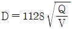
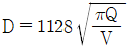
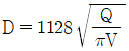
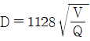
(정답률: 64%)
91. 다음 중 열관류율의 단위는?
- kcal/mㆍhㆍ℃
- kcal/m2ㆍhㆍ℃
- kcal/m3ㆍhㆍ℃
- kcal/m4ㆍhㆍ℃
(정답률: 85%)
92. 보일러의 열정산시 출열 항목이 아닌 것은?
- 배기가스에 의한 손실열
- 발생증기 보유열
- 불완전연소에 의한 손실열
- 공기의 현열
(정답률: 74%)
93. 보일러의 전열면적이 102이상, 15m2 미만인 것은 방출관의 안지름이 몇 mm 이상이어야 하는가?
- 10
- 20
- 30
- 50
(정답률: 54%)
94. 긴관의 일단에서 급수를 펌프로 압입하여 도중에서 가열, 증발, 과열을 한꺼번에 시켜 과열증기로 내보내는 보일러로서 드럼이 없고, 관만으로 구성된 보일러는?
- 이중 증발보일러
- 특수 열매 보일러
- 연관 보일러
- 관류보일러
(정답률: 92%)
95. 연소실에서 연도까지 배치된 보일러 부속 설비의 순서를 바르게 나타낸 것은?
- 절탄기→과열기→공기 예열기
- 과열기→절탄기→공기 예열기
- 공기 예열기→과열기→절탄기
- 과열기→공기 예열기→절탄기
(정답률: 68%)
96. 노통 연관 보일러의 노통의 바깥면과 이에 가장 가까운 연관의 면과는 얼마 이상의 틈새를 두어야 하는가?
- 5mm
- 10mm
- 20mm
- 50mm
(정답률: 81%)
97. 보일러의 부대장치 중 공기예열기 사용시의 장점이 아닌 것은?
- 연료의 착화열을 줄인다.
- 연소 효율이 증가한다.
- 보일러 효율이 높아진다.
- 과잉공기가 많아진다.
(정답률: 82%)
98. 수과보일러에서 수냉 노벽의 설치 목적으로 가장 거리가 먼 것은?
- 보온의 연소열에 의해 내화물이 연화 변형되는 것을 방지하기 위하여
- 물의 순환을 좋게 하고 수관의 변형을 방지하기 위하여
- 복사열을 흡수시켜 복사에 의한 열손실을 줄이기 위하여
- 전열면적을 증가시켜 전열효율을 상승시키고, 보일러 효율을 높이기 위하여
(정답률: 65%)
99. 프라이밍(Priming) 및 포밍(Forming)이 발생한 경우에 취하는 조치로서 옳지 않은 것은?
- 연소량을 가볍게 한다.
- 보일러수의 일부를 분출하고 새로운 물을 넣는다.
- 증기 밸브를 열고 수면계의 수위의 안정을 기다린다.
- 안전밸브, 수면계의 시험과 압력계 연락관을 취출하여 본다.
(정답률: 68%)
100. 급수의 순도 표시방법에 대한 설명으로 틀린 것은?
- ppm의 단위는 100만분의 1의 단위이다.
- epm은 당량농도라 하고 용액 1kg 중의 용질 1mg 당량을 의미한다.
- 보일러수에서는 재료의 부식을 방지하기 위하여 pH가 7인 중성을 유지하여야 한다.
- 알칼리도는 물 속에 녹아 있는 알칼리분을 중화시키기 위해 필요한 황산의 양을 말한다.
(정답률: 86%)
30kg * 8000kcal/kg = 240000kcal
따라서 이 기관이 발생시키는 열의 양은 240000kcal이다.
하지만 이 기관의 출력은 100kW이므로, 1시간 동안 발생시키는 열의 양은 다음과 같다.
100kW * 1시간 = 100kWh = 360000kcal
즉, 이 기관의 열효율은 다음과 같다.
240000kcal / 360000kcal * 100% = 66.67%
하지만 이 문제에서는 정답이 "36"이다. 이는 반올림한 값으로, 소수점 이하를 버리고 정수로 표현한 것이다. 따라서 위에서 구한 66.67%를 반올림하여 67%에서 1을 뺀 값인 36이 정답이 된다.